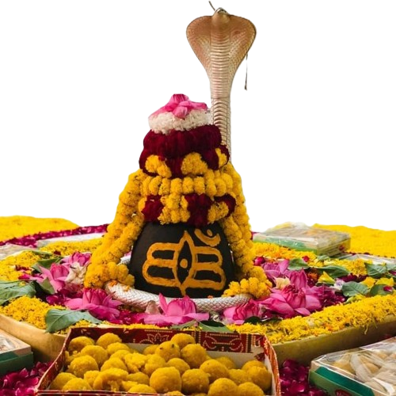
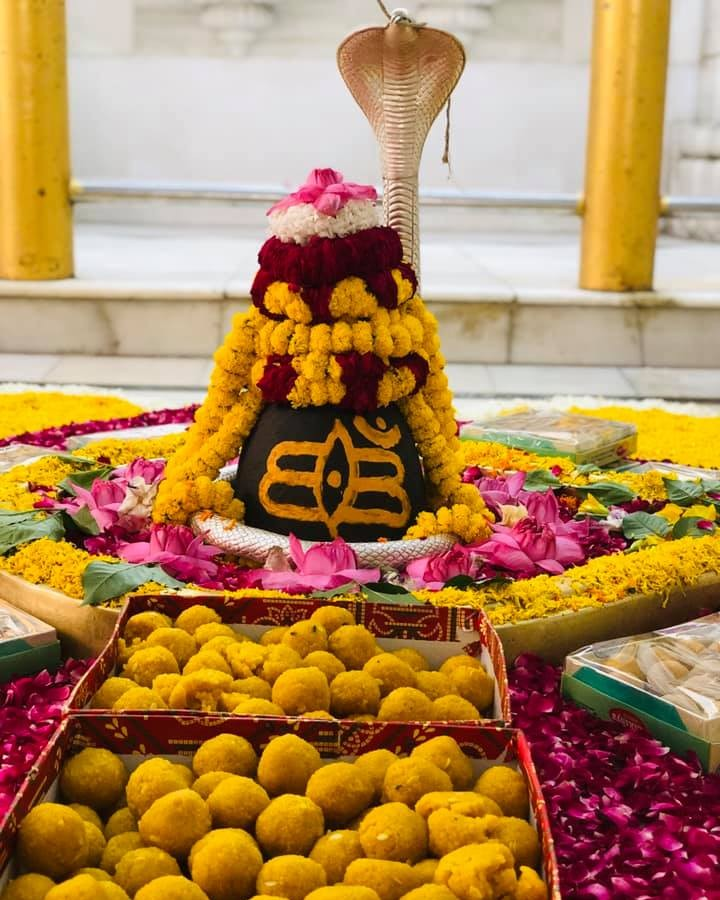
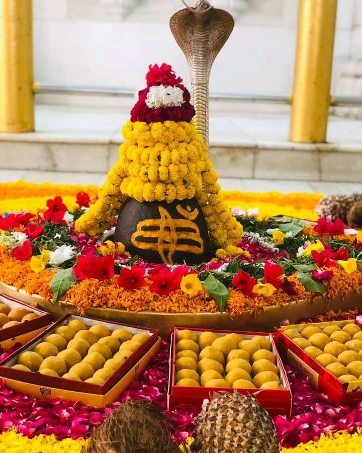
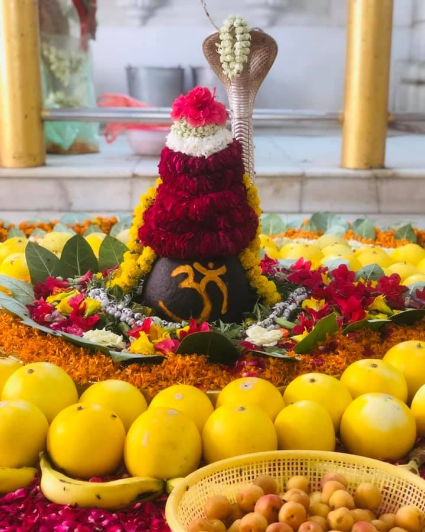
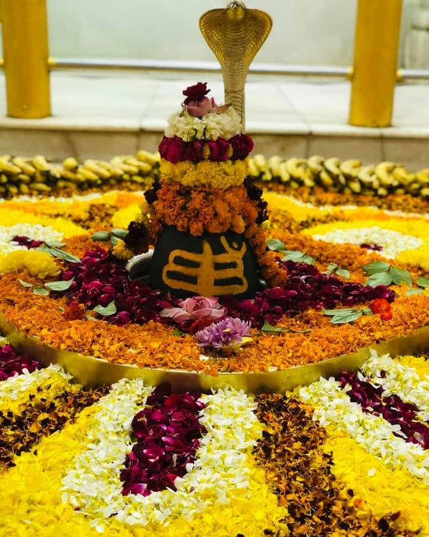
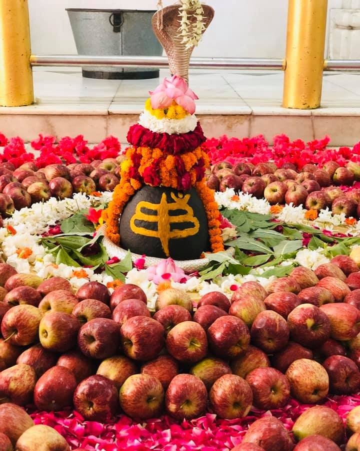

SHANALESHWARA
SWAYAMBHU
ANCIENT • DIVINE • PEACE
Maha Shivratri 2026
This year, Maha Shivaratri will be celebrated on Sunday, February 15, 2026, with the Nishita Kaal Puja timings starting from 12:09 AM to 01:01 AM on February 16, 2026, and Shivaratri Parana timings starting from 06:59 AM to 03:24 PM on the same day.
00DAYS
00HRS
00MIN
00SEC
The Divine Swayambhu
Self-Manifested: This Lingam is Swayambhu (Self-created). It embodies Shiva's power inherently and needs no Prana Pratishtha.
HISTORY (1592): Built by the Maharaja of Patiala. Maintained by Juna Akhara Sadhus. A center of Guru-Shishya tradition for over 600 years.
Temple Timings
Morning Aarti 04:00 AM - 11:45 AM
Evening (Winter) 02:30 PM - 08:00 PM
Evening (Summer) 02:30 PM - 08:30 PM
Monday Special Open till 09:30 PM
Divine Gallery




